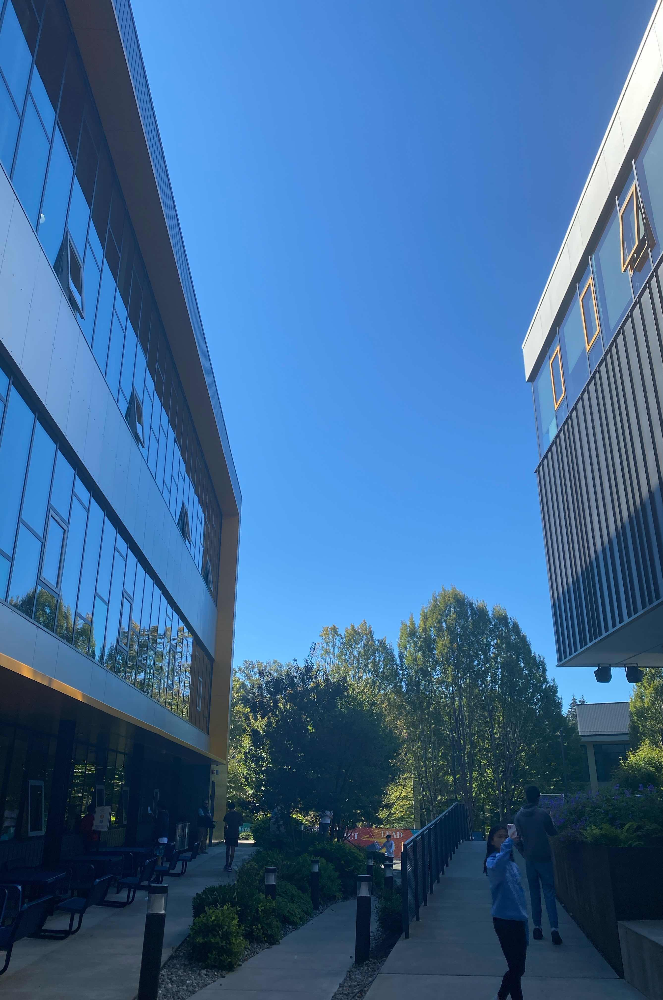

My favorite Things About EPS
My favorite classes
Below are some of my favorite classes that I've taken or am taking:
- Advanced Physics
- Advanced Calculus
- Environmental Science
- Advanced Programming
- Chemistry
My favorite food
Javier's legendary breakfast potatoes can never be surpassed!

Here's a tutorial on how to cook breakfast potatoes:
Below is the photo that I got my colors from. The color scheme I'm using is monochramatic. The emotion related to this color scheme is calmness.
